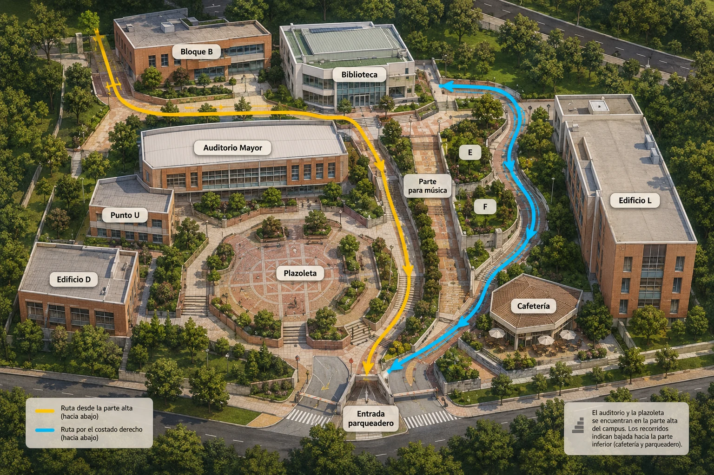

Campus institucionales3
Explora tu universidad
Lugares y Campus
Explora los espacios universitarios, consulta sus servicios y guarda tus lugares favoritos.

UNABFormación que
transforma
transforma
Espacios del croquis12
Tus favoritos0
Mapa interactivo
Información institucional ↗Explora los campus UNAB
Selecciona un campus y después toca un marcador para consultar sus espacios.

Selecciona un marcador para consultar el lugar
Lugares destacados
Selecciona un espacio para ver sus detalles.
Mis lugares favoritos
Guarda los espacios que consultas con frecuencia.
Aún no guardas lugares favoritos.
Conoce cada rincón de la UNAB
La ubicación de los puntos del mapa es ilustrativa. Verifica rutas y espacios con la señalización oficial del campus.
Más que
una universidad
una universidad